Drone Innovation Center
Full Sail’s drone lab: six zones along one hallway of classrooms, from a netted indoor flight arena to a situation room.
- My role
- Lead designer
- Scope
- Brand direction, logo, space design, wayfinding
- Year
- 2025
Hallway mockups
How the signage was planned on photos of the hallway.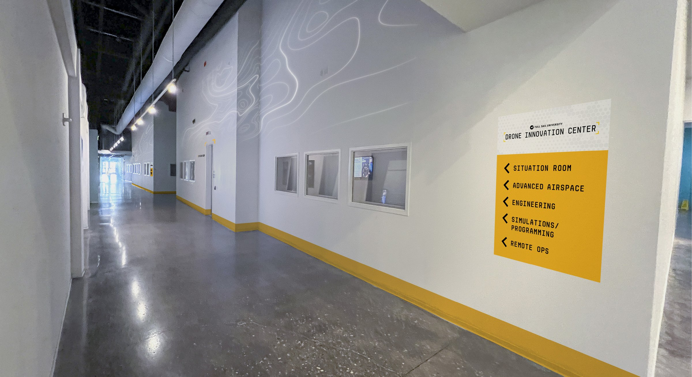
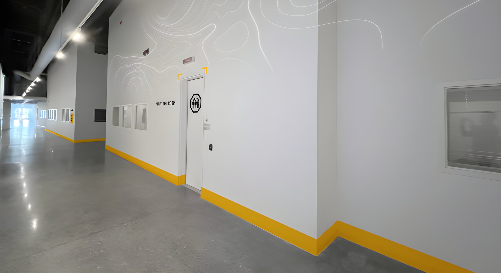
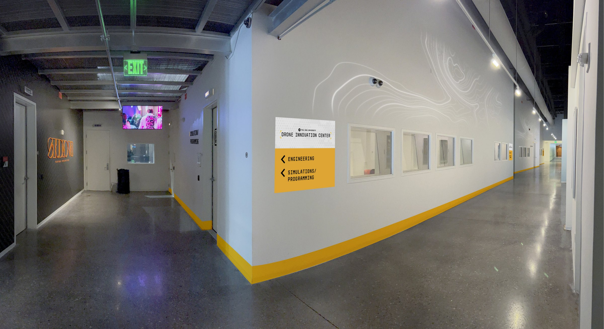
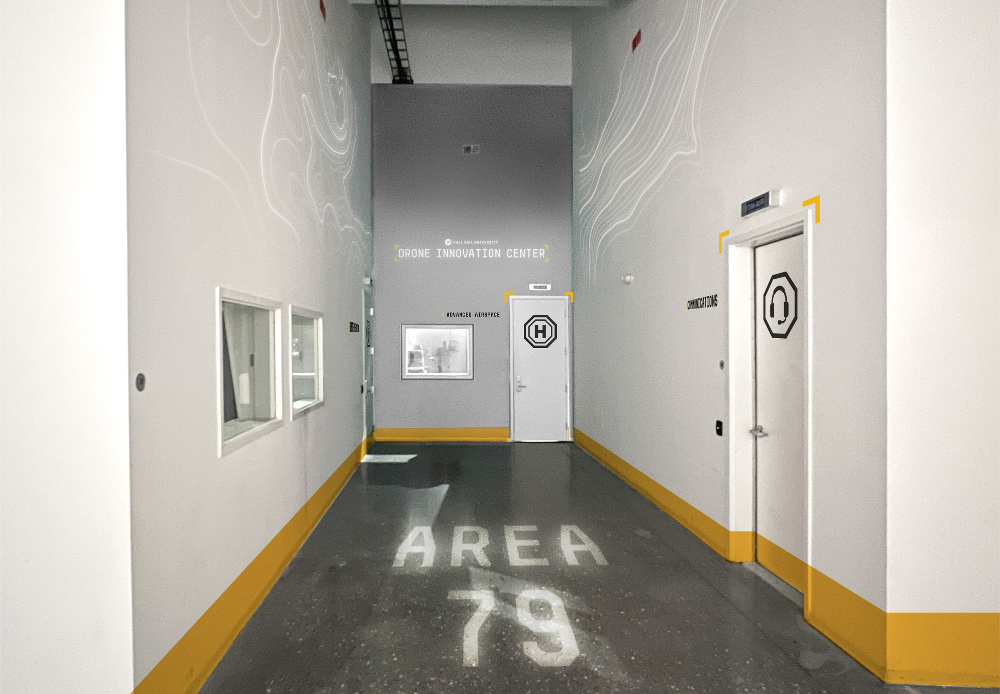
AREA 79. A callback to 1979, the year Full Sail was founded.The direction
The center is about engineering: building drones, learning to fly them and flying them. So the look is tech-forward and industrial.
The accent is highlight yellow, the color used to mark industrial spaces.
Stylescape
Set the look for the assets and the spaces: color, iconography and type.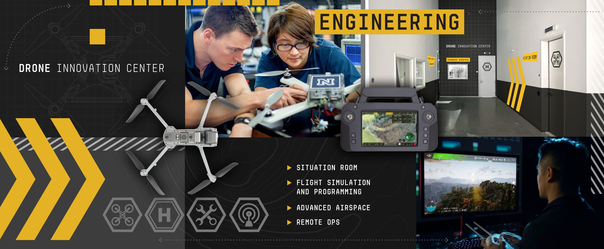
Logo
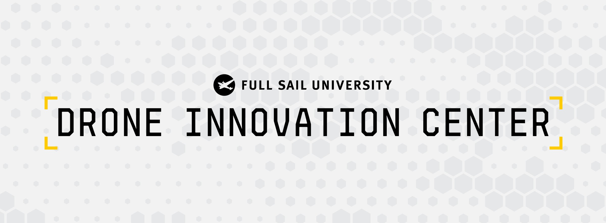
Wayfinding
The center’s rooms are spread along a shared hallway. A yellow line runs along the wall to mark every room that belongs to it.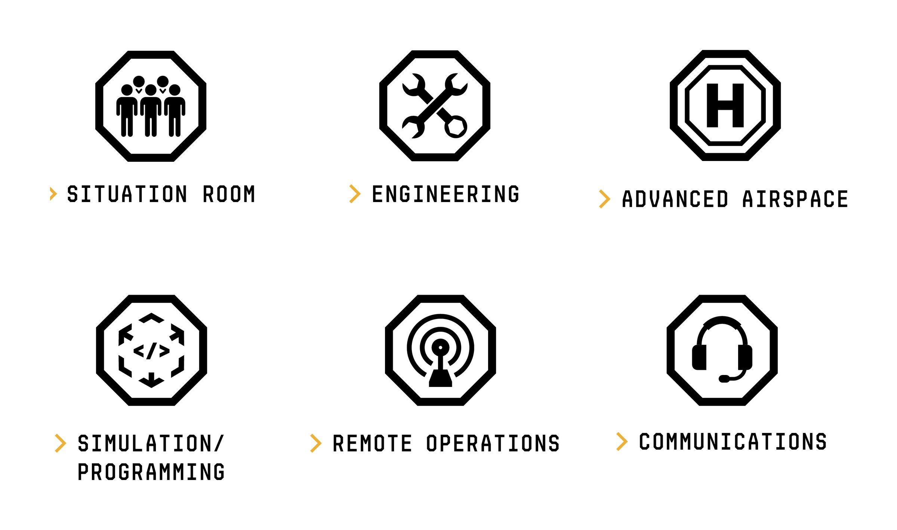
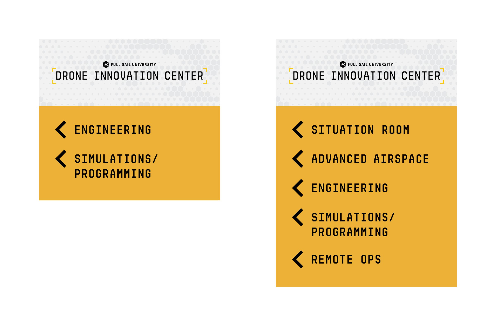
In the space
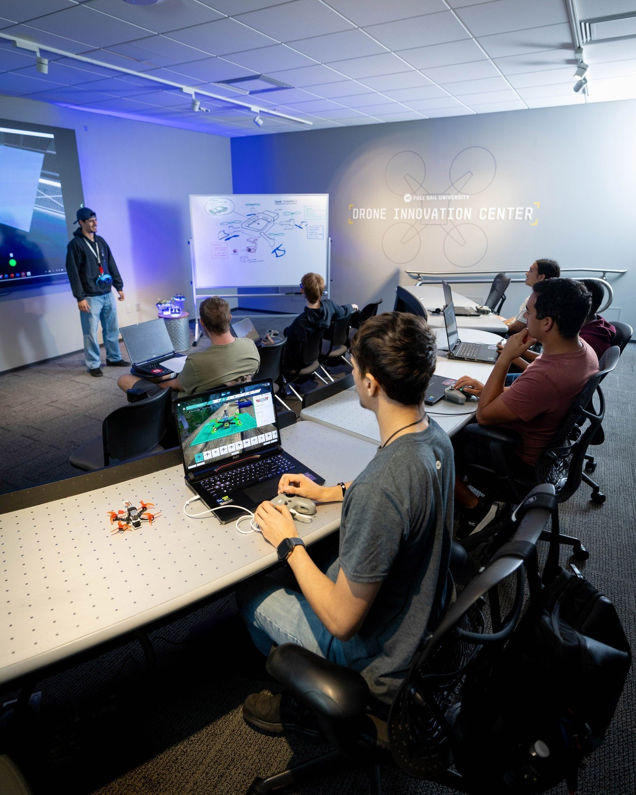
Situation Room.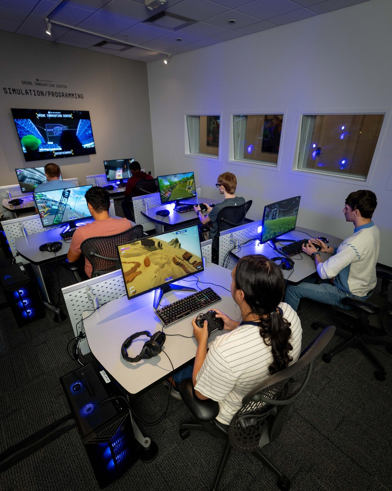
Simulation/Programming.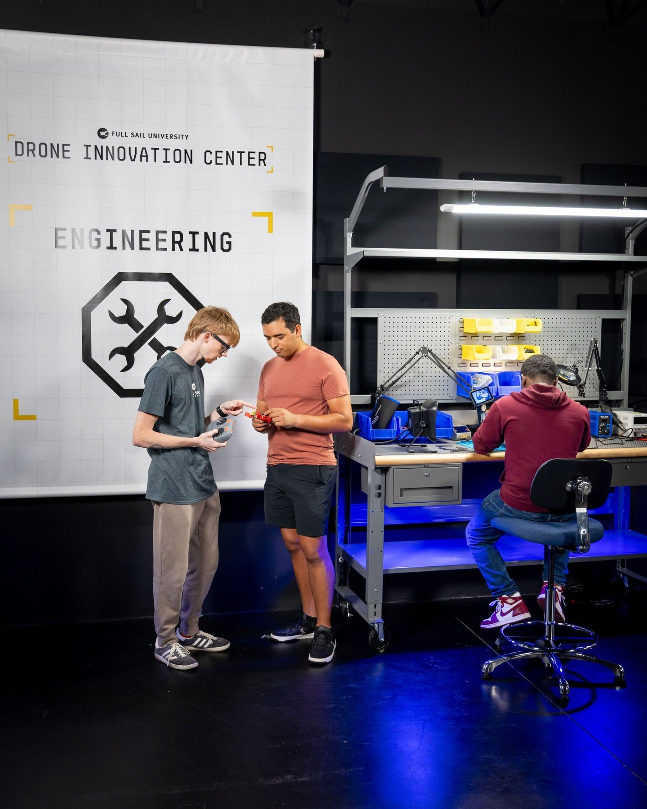
Engineering.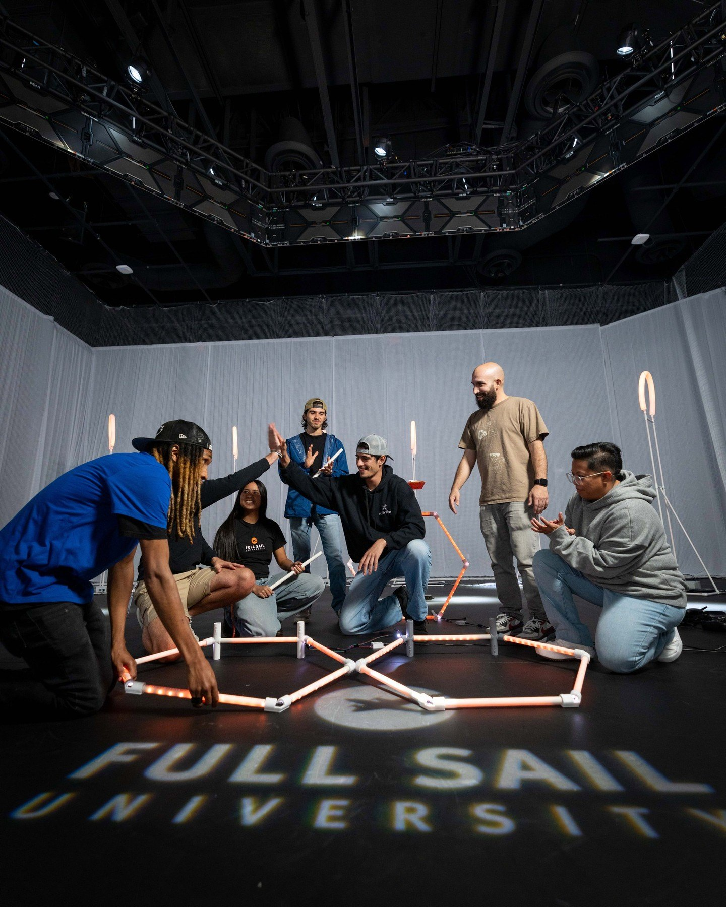
Advanced Airspace.My part
As lead designer, I set the brand direction and designed the logo, then carried it into the space: the zone icons, the walls and the wayfinding for the hallway and classrooms.